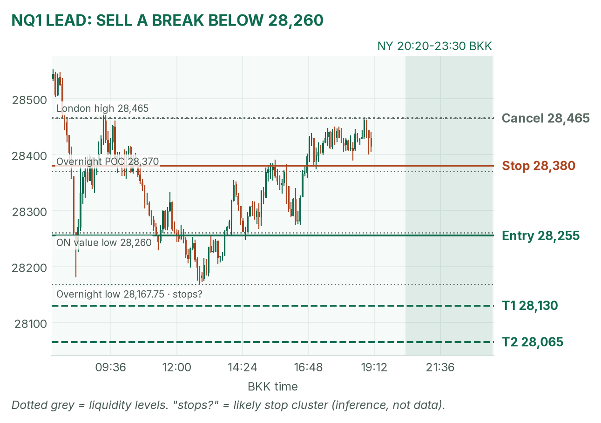
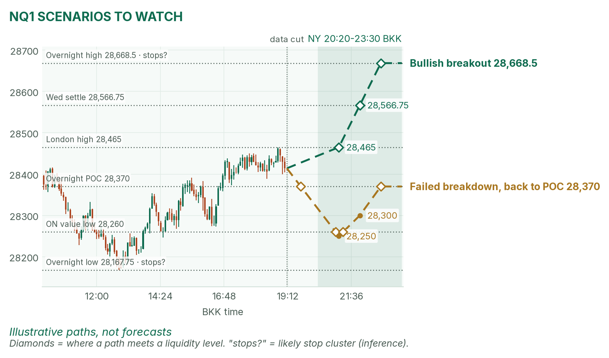

Election trade, day two. Gold holds its gains inside value; Nasdaq is stuck under its overnight POC.
Window 20:20–23:30 BKK. Data cut 19:10 BKK: GC 4,137.5, NQ 28,414 (TopstepX Z26, last complete 5m bar). Levels only. Ideas, not advice.
Summary
GC: buy a dip into 4,124–4,128 that holds. Stop 4,117, target 4,147 (2.3R). About 36%.
NQ: sell a 5m close below 28,260 after the 21:30 stock open. Stop 28,380, target 28,065 (1.5R). About 33%.
US jobless claims and labour costs at 20:30, ten minutes into the window. No entries 20:25–20:32.
Flat by 23:30, no matter what.
The market story
After the Democrats' midterm sweep, oil and yields fell, easing Fed-hike fears. Gold ran from 4,067.0 to 4,155.8 by 10:55 and holds about $64 over Wednesday's settle (4,073.0, per April). Nasdaq fell on fears a Democratic Congress slows AI data-centre spending. NQ hit 28,167.75 at 12:50, bounced, and sits just above its overnight POC (point of control: the price where the most contracts traded).
Since London opened, both have gone sideways: gold 4,129.1–4,147.7, NQ 28,267.25–28,465. That is balance, and balance tends to break on news: 20:30.
How I read it: gold's higher-timeframe bias is up, so I buy its dips at value. NQ's bias is down, so I sell a break, not a bounce.
News (BKK)
Time
Event
Forecast
Prior
Read
20:30
US jobless claims
197K
194K
Hot (under 197K) lifts yields: bad for GC and NQ.
20:30
Q3 productivity / unit labour costs
3.1% / 1.4%
1.4% / 1.2%
Labour costs above 1.4% read hot.
20:50, 21:10
Fed's Hammack, then Barkin
speeches
Hike talk pushes yields up.
No-trade zone: 20:25–20:32. Bank of England result (19:00) not checked at the cut.
Levels to watch
Level
GC
NQ
Wednesday high / low
4,081.2 / 3,928.2
28,969 / 27,615.75
Overnight high
4,155.8
28,668.5
London high / low
4,147.7 / 4,129.1
28,465 / 28,267.25
Overnight value area (70% of volume)
4,123–4,149
28,260–28,445
Overnight POC
4,134
28,370
Overnight low
4,067.0
28,167.75
Window range, median / 80th pct (20 days)
39 / 51 pts
292 / 448 pts
Expected range today
about 4,118–4,157
about 28,268–28,560
Gold (GC1)
Bias: bullish. Price is holding inside its new value area instead of giving it back. My gold rule fades the COMEX opening range (from 20:20) back toward the POC, 4,134. Claims land inside that range, so I wait.
The trade: buy the dip at value
Entry
4,124–4,128 (plan 4,126): a dip through the London low (4,129.1) that closes back above 4,125 on 5 minutes, after 20:32
Stop
4,117: under the 12:30 low (4,118.0) and value low (4,123), where sell stops likely sit (inference)
Targets
1R partial 4,135 (the POC) · full target 4,147 (2.3R), just under the London high
Cancel
Trades below 4,117 before entry, or none by 22:30
Probability
~36%, an estimate. Basis: NY gold opening ranges mostly failed and reverted in my study (not significant); 21 points to target is about half a typical window.
Why: in a trend, the first pullback to value is where buyers reload. Hot claims can push gold straight through 4,117; then there's no trade, and I don't catch a falling knife. April's brief agrees on the bias (gold "the clear winner"). VWAP (volume-weighted average price) is a filter only after 20:50.
Illustrative paths, not forecasts. Dotted lines are liquidity levels, where resting orders likely cluster.
Scenarios to watch
Bullish breakout: a 15m close above 4,155.8, the overnight high, where buy stops likely sit (inference). Aims for the round 4,170.
Bearish breakdown: a hot print and a 15m close below 4,123. Aims for 4,100, then 4,081.2 (Wednesday's high).
Nasdaq (NQ1)
Bias: bearish. Chips are still selling and the London bounce stalled at 28,465. My NQ rule trades breaks of the 5-minute range after the 21:30 open.
The trade: bearish breakdown
Entry
28,255 on a 5m close below 28,260 (value low) and the 21:30–21:35 range low
Stop
28,380: back above the overnight POC (28,370)
Targets
1R partial 28,130 · full target 28,065 (1.5R), past the 28,167.75 overnight low where sell stops likely sit (inference)
Cancel
NQ trades 28,465 (London high) before entry, or none by 22:30
Probability
~33%, an estimate. Basis: NQ 5-minute range breakouts averaged +0.37R in my study (not significant); 190 points is two-thirds of a typical window, so I shade it down.
Why: losing value low opens the path to the morning low. The stop is wide (125 points, about 4.5 five-minute ATRs, the average bar size of 28 points). A wider opening range means skip. April's brief agrees: her in-line case revisits 28,167.75. VWAP filter only after 22:00.

NQ 5m bars to 19:10 BKK, window shaded. The trigger is the value low that held at 16:00.

Illustrative paths, not forecasts: breakout and failed breakdown.
Scenarios to watch
Bullish breakout: a 5m close above 28,465 and the opening range high. Aims for 28,566.75 (Wednesday's settle), then 28,668.5.
Failed breakdown: a poke below 28,260 that closes back above within 15 minutes. Aims for 28,370 (POC).
6E (not traded in NY): 1.12365, near its overnight low of 1.12335 as the dollar firms. Oct 30 NY: GC never triggered; NQ hit target.
Before you click
ORB bases. GC NY: COMEX 20:20 range, ends at the first candle under half the average volume of the first two, fade to POC. NQ: fixed 5-minute range after 21:30, trade breakouts.
Checklist. Room to max loss? Within daily rules? No release within 30 minutes? With the bias? At a marked level? Setup tagged? Entry, stop, partial, target set? Calm?
Reset (60 seconds). Breathe in 4, hold 4, out 6, five times. Name the feeling; if "eager", wait 5 minutes.